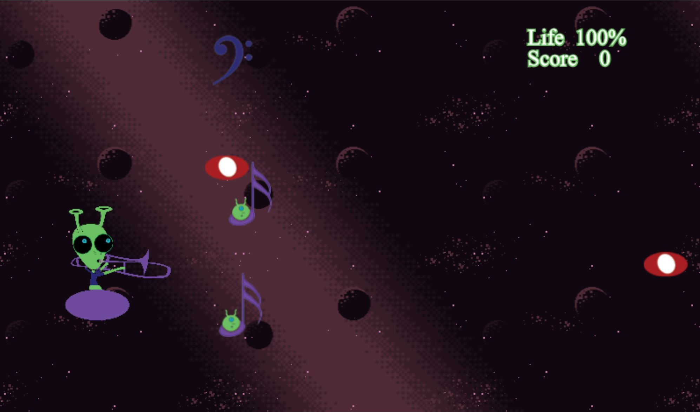
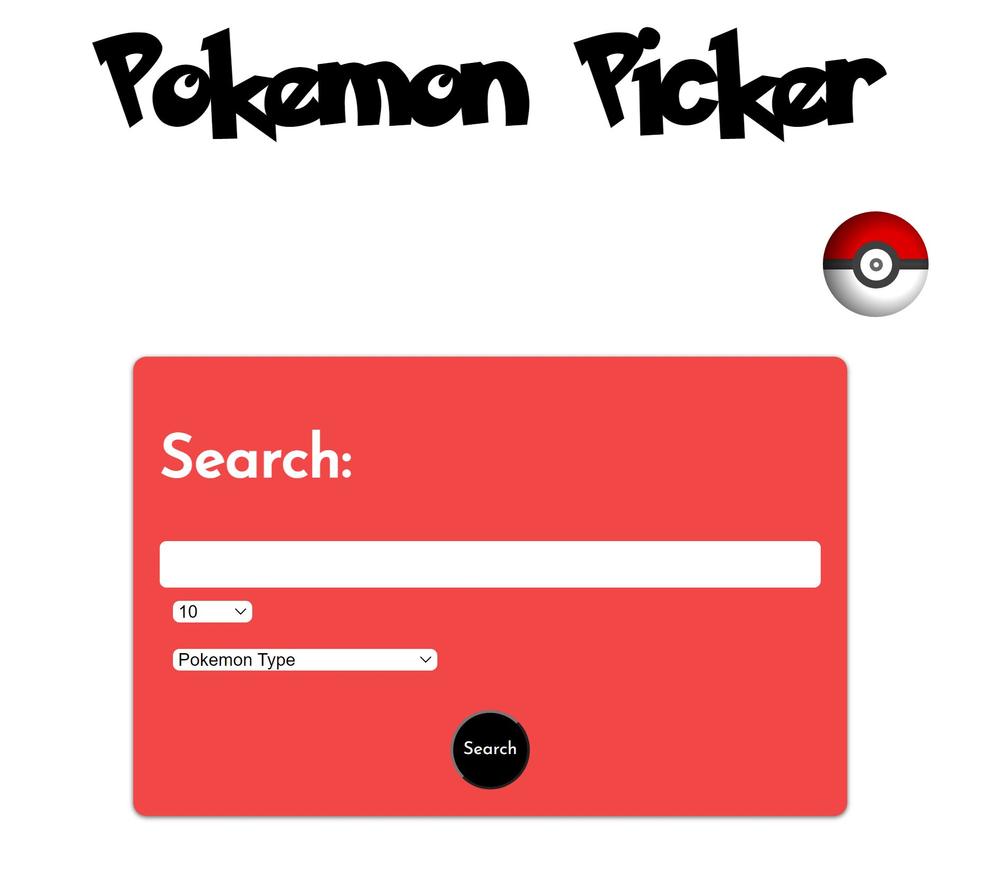
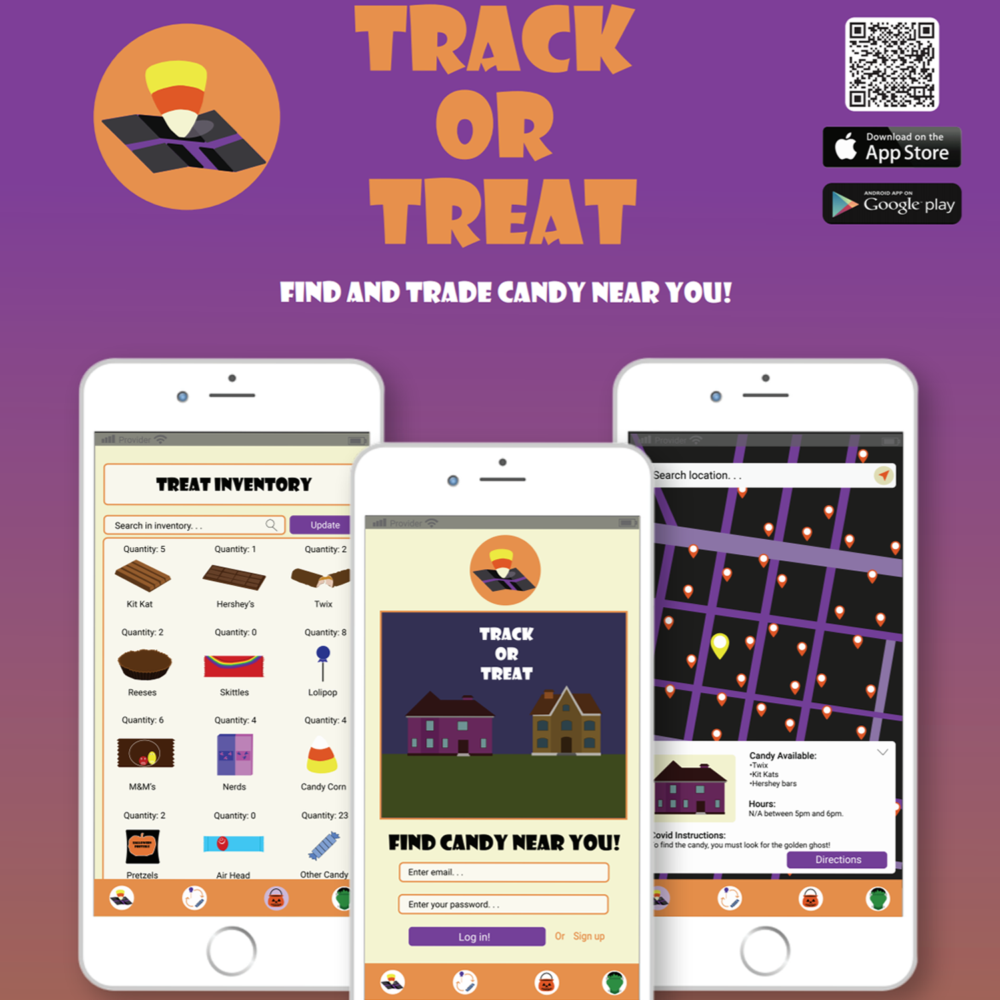

About me:
My name is Victoria Olivieri and I am currently a student at Rochester Institute of technology. I am currently looking for Software Engineer co-op for Spring 2022 and/or Summer 2022. I have skills in HTML, CSS, JavaScript and C#. I love to learn and I tend to thrive in challenging situations. You can contact me here.
Projects:
Trombone Astro
This is a game that I created using JavaScript, PIXI.js, html and
css.
The goal of the game is to collide with the aliens in the music notes to gain points.
The red whole
notes are "enemy aliens" that cause the main character, Meep, to lose life. To gain life
back, Meep needs
to collect the base clef note. Once the user loses all life, the game is over and the
user has the option to
play agian. There were a few challenges that I ran into with this project. The main one
being that
I orinially wanted Meep to hit the enemies with the trombone in order to gain points. I
had a lot of trouble
making this become a reality, so I changed it so that when Meep collides with the
specific enemy, the score
is increased. I learned a lot while making this game, such as how to use sprites, make a
moving background and
insert audio into the application. I created the sprites for Meep, enemy aliens, and the
notes using adobe illustrator. I also
recorded myself playing my own trombone and edited the sounds using audacity to give it
a "space-y" tone.
Please check out my project here.
Pokemon Picker
Pokemon
Picker is a website
designed to let the user search pokemon based on either name or pokemon type. Once the
user completes the search,
they have the option to add that pokemon to their pokeball. The local storage will use
this information to keep the
data saved when a different page is used. Using this website will help the user create
their own pokemon party. I ran into a few challenges
with this project. The data that was read from the pokemon API was challenging to figure
out the correct links. I went through
the API many times to determine how to get certain data for the website. One thing that
I plan to improve for this project
is to add previous and next buttons so that the entire page is not filled with all the
pokemon.
Track or Treat App
The assignment for this project was to design an app using Adobe
Illustrator and
create a poster that advertises it. Around the time of Halloween, I came up with an idea
that I thought
would be perfect for trick-or-treaters in 2020. This app was designed for families and
young people who
would be trick-or-treating. Due to the pandemic, many people did not go out on Halloween
and this app
could help lessen the anxiety about the disease. It would allow the user to see what
houses were available to
trick-or-treat and when they were available (if specified) as well as special Covid-19
instructions for the
tick-or-treaters. This app will also allow users to find safe public areas such as a
park bench, or a stop sign
where users could safely trade their candy. One great feature about this app is that the
user can see their candy
inventory and update it accordingly so that they know what they have and whether they
would want to trade any of it
for something better. This was one of the most rewarding projects I have completed. Not
only did it allow me to
come up with an original idea, but I was also able to utilize Illustrator for the first
time and create a successful
app design. Check out this project here
to take a look at the pdf files for the mockup.